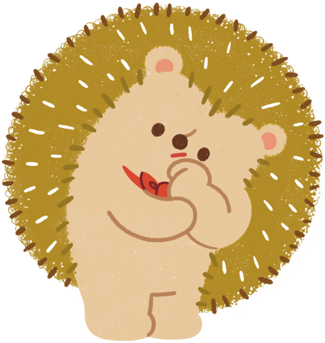
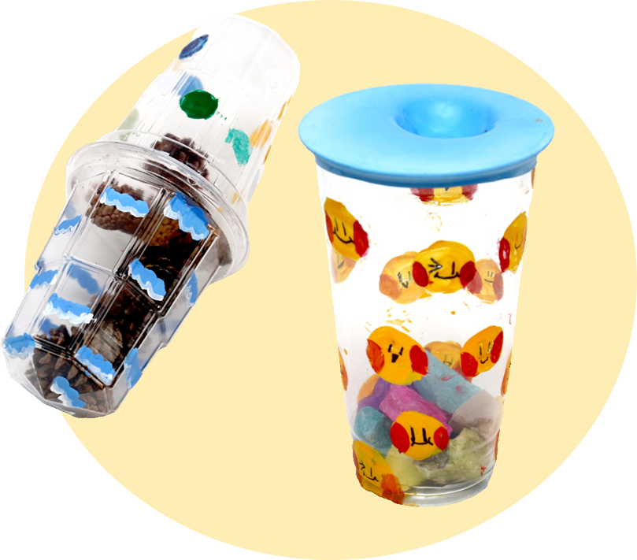

활동하기2 자연의 냄새를 수집해 봅시다.
‘자연의 냄새 수집하기’ 활동 방법
정답
자연에서 다양한 냄새가 나는 자연물을 수집합니다.
계란판의 각 칸에 수집한 자연물을 넣습니다.
종이에 어떤 냄새를 수집했는지 적어서 뚜껑에 붙입니다.
활동하기2 자연의 냄새를 수집해 봅시다.
김무찬(학생 작품) 「자연의 냄새 수집」
(계란판, 꽃, 나뭇잎, 이끼, 돌, 종이, 색연필, 사인펜/30×30×7 cm)

자연에서 맡은 다양한 냄새를 모았어.
정답
활동하기2 자연물로 악기를 만들어 봅시다.
‘자연물 마라카스 만들기’ 활동 방법
정답
자연물 중 한 종류를 정하여 여러 개 모아 플라스틱 컵이나 병에 넣습니다.
겉을 꾸미고 흔들어 악기로 사용합니다.
활동하기2 자연물로 악기를 만들어 봅시다.

최은서, 김가윤(학생 협동 작품)
「솔방울 마라카스」(플라스틱, 솔방울,
아크릴물감 등/9×9×17 cm)
정서윤, 김가은(학생 협동 작품)
「돌 마라카스」(플라스틱 컵, 풍선,
돌, 아크릴물감 등/9×9×14 cm)
조개껍질과 도토리, 모래, 돌을 병에 넣어서 악기를 만들었어.
정답